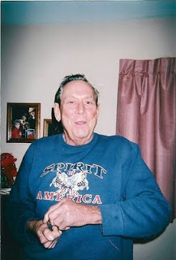
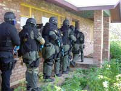

General Colin Powell's Doctrine of the U.S. Armed Forces is that the United States should be the `meanest dog in town' to frighten a potential enemy.... When force is used, it should be with `overwhelming strength and no half-way measures.' In law enforcement, these principles are routinely applied in both field and tactical operations. ... Law enforcement [application] of the Powell Doctrine is clear: have overwhelming and superior resources available, primarily as a deterrent, but use them decisively when needed. --
Career Law Enforcement Officer Edward "Tad" Leach, "Applying the Powell Doctrine to Law Enforcement," Police Chief magazine, October 2001 (executive summary)
Einsatzgruppen (German) -- "Special task forces" composed of police, military, and intelligence personnel deployed to target and eliminate people identified as "anti-German elements" by the National Socialist regime.
The invaders who murdered Hampton, Virginia resident William Cooper swiped about $900 in cash. They seized his gun collection. They took the Lexus from his driveway. By some oversight they neglected to extract the gold fillings from his teeth.
While they made off with a decent haul, the robbers were doubtless disappointed that they couldn't locate the large stash of illicit prescription drugs they had expected to find. They had the luxury of tossing the home at leisure without worrying about being interrupted by the police -- on account of the fact that they were the police.
William Cooper, a 69-year-old retiree who suffered from the familiar variety of afflictions attendant to age, was startled awake on the morning of June 18 by two men who had barged into his home with their guns drawn and ready. Since he lived in a neighborhood in which home invasions (of the non-State-sanctioned variety) were commonplace, Cooper slept with a loaded handgun on his nightstand. He made an entirely proper but regrettably ineffective use of that weapon in an effort to repel the intruders, and was gunned down in his bedroom.
The police raid was triggered by an unsubstantiated tip from a still-anonymous informant that the NASA retiree -- who walked with a cane and, according to his neighbors, never seemed to have any visitors -- was illegally selling prescription drugs from his home. After they murdered Cooper, the police found about two-dozen different prescription drugs in the home, including various painkillers and medications for blood pressure, heart disease, and diabetes.
 |
| Newport News Daily Press photo |
The lethal June 18 assault on William Cooper's home was carried out under the supposed authority of Virginia's Peninsula Narcotics Enforcement Task Force (PNETF).
The "Asset Forfeiture Addendum" to the PNETF's most recent "Memorandum of Understanding" specifies that "TASK FORCE investigations should result in the seizure of forfeitable assets." It is also expected that the plunder will be distributed "in a fair and equitable manner," with a little more than one-third going to the city governments of Hampton and Newport News, a little less than a fifth going to the State Police, and the rest being lavished on the "Peninsula Association of Commonwealth Attorney's Association" (redundancy in the original). At least some of the boodle would be used to cultivate other informants, as well.
To understand what really happened in William Cooper's home on June 18, it's useful to imagine the murdered retiree's body surrounded by police, prosecutors, and local politicians who pick over his lifeless form like a colony of vultures. The cash is divvied up, with Hampton and Newport News getting about $300 apiece, the State Police receiving roughly $180, and the local prosecutors laying claim to about $120. For taking the lead in the heist, the Hampton Police Department is permitted to keep Cooper's car and gun collection, to use or liquidate as it sees fit.
As this is a "civil forfeiture" action, it's not necessary to prove that Cooper actually broke any law. And since he's dead, he can't contest the forfeiture action in court. If police had conducted an actual investigation, rather than staging a home invasion robbery on the pretext provided by an unsubstantiated tip from an unknown informant, they and their cohorts wouldn't have been rewarded with this modest haul.
 |
| The Gilbert SWAT team, as depicted on its website. |
This has to be considered a species of miracle, given that the raiding party consisted of at least a dozen masked commandos who were clad in riot gear, packing assault rifles, and obviously eager for an opportunity to put a boot on someone's neck.
The throng of armed tax-feeders that laid siege to Taylor's home consisted of five undercover officers and seven from the criminal apprehension team. As the Phoenix New Times reports, the police raid came in response to a tip from the guy who installed Taylor's satellite TV system, a collectivist drone with the soul of a Stasi informant who who spied a tiny amount of pot in the house and did his duty. As an overture to the assault, the raiders cut power and water to the targeted home, presumably to prevent anyone inside from disposing of the purported contraband.
Taylor had just purchased his home at the time of the raid. Three employees of a local moving company were present when the stormtroopers arrived; they were handcuffed and detained for more than an hour while the raiders interrogated Taylor and ransacked his house.
As it happens, there was marijuana in Taylor's home, but it wasn't contraband. Taylor is a card-carrying medical marijuana patient who is permitted, by what the Arizona government presumes to call the "law," to own up to 2.5 ounces of marijuana.
Taylor patiently explained these facts to the bellicose bullies who were holding him at gunpoint. When he showed one of the SWAT operators his state-issued medical marijuana card, the masked invader told him, "I don't even know if you're supposed to have this card," referring to a lawsuit filed by Jan Brewer's administration against Proposition 203 (the Arizona Medical Marijuana Act), an initiative that passed last November.
Under the terms of that statute, as elucidated by the Arizona Department of Health Services (DHS), those who qualify for medical marijuana cards "can obtain medical marijuana from a dispensary, the qualifying patient's designated caregiver, another qualifying patient, or, if authorized to cultivate, from home cultivation." (Emphasis added.)
Taylor told his unwanted visitors that he had purchased the marijuana from another card-carrying medical marijuana patient. He was informed that this meant he wasn't legally in possession of the marijuana, notwithstanding the fact that the text of the statute and the DHS guidelines explicitly permit transactions of that kind.
According to Gilbert PD press flack Sgt. Bill Balafas, "no one is licensed to sell [marijuana] and no dispensaries are open, yet." Actually, the statute itself, as the DHS admits, effectively licenses anyone with a medical marijuana card to distribute pot to other qualified users.
The agency itself was required to begin issuing permits for marijuana dispensaries at the beginning of June. However, Gov. Brewer instructed Arizona Attorney General Thomas Horne to order the DHS to disobey the law by refusing to accept applications for businesses seeking to open dispensaries. This was done to buy time while Brewer filed a federal lawsuit to overturn the voter-enacted medical marijuana law.
Misguided conservatives who depict Jan Brewer as a champion of "states' rights" aren't likely to take note of, or be troubled by, her overture to Washington to practice nullification in reverse by intervening to suppress a voter-enacted measure liberalizing the state's marijuana laws.
The Brewer administration's stated reason for seeking an injunction against the law is a fear that state employees would be subject to prosecution for violating federal anti-drug ordinances. That legal argument was supplied by "Keep AZ Drug Free," the pressure group that opposed last year's marijuana initiative. (It's worth pointing out that the organization's name encompasses the patent falsehood that Arizona, or any other state, is and can be kept "drug-free.") A more honest assessment would lead to the conclusion that in Arizona, as is the case everywhere in the Soyuz, state and local law enforcement agencies have been subsumed into the federal Drug War apparatus -- and that the political elite aren't willing to end that lucrative arrangement.
The Arizona Criminal Justice Commission, which is "responsible for granting millions of federal and state dollars" to police agencies, has designated support for narcotics task forces, along with related asset forfeitures, as its "first priority." The Commission's current "State Strategy" for "Drug, Gang and Violent Crime Control" is commendably barren of idiotic prattle about making, let alone "keeping," the state drug-free. It acknowledges that Arizona "is the arrival zone for most drugs smuggled into the United States"; that marijuana "remains readily available and is considered the most widely used illegal drug throughout the state"; that "cocaine is readily available throughout Arizona, and that the same is true of methamphetamine.
The policy objective of the Arizona Criminal Justice Commission -- as is true in each of the other fifty federal administrative units called "state governments" -- is not to eliminate the narcotics trade, or even to abate it in any dramatic way, but rather to transmute it into a reliable source of revenue for the political class and its armed auxiliaries. Toward that end, the Commission in Arizona, with the help of plundered money provided by Washington, created sixteen state "drug task forces" in 2007. Those task forces have "a permanent institutional tie" with the Attorney General's Office of Financial Remedies.
Arizona's coercive sector has benefited tremendously from "the overwhelming success of the asset forfeiture [program] in Arizona," boasts the Commission. In the year following creation of the sixteen state counter-narcotics task forces, revenue from asset forfeitures more than doubled -- from $19,576,626 in 2006 to $40,297,456 in 2007.
As Tom Barry of the Center for International Policy observes, the Commission's strategy document leaves the impression it "is a drug war agency, not one dedicated to finding ways to improve criminal justice in Arizona." Once again, this is typical of law enforcement nation-wide: "Whether at the state or county government level, the war on drugs is the main prism through which criminal justice and law enforcement agencies view crime and violence."
What this means, of course, is that "local" police agencies are essentially support systems for a plundering army that is literally waging war against the people in the guise of narcotics enforcement. In fact, a good case can be made that these paramilitary task forces -- or, to use the proper German translation, einsatzgruppen -- are carrying out the precise role that would be played by the dreaded blue-helmeted UN "peace enforcement" units that haunt the imagination of many "law and order" conservatives.
| Which is the more urgent threat -- UN "peacekeepers" Congo... |
The idea of a UN "Peace Force" was made official federal government policy in the 1961 State Department Document entitled "Freedom from War: The United States Program for General and Complete Disarmament in a Peaceful World."
That proposal, also known as State Department Document 7277, outlined a three-stage program through which the United Nations would be "progressively strengthened in order to improve its capacity to assure international security and the peaceful settlement of disputes." All national governments would be required to provide military personnel and assets to empower the UN, which -- as British author Simon Tisdall reminds us, was always intended to be a "war-fighting machine," rather than a forum for peaceful resolution of disputes.
The Orwellian locution employed to describe this function is "peace enforcement." The ongoing mission in Libya, which Mr. Obama refuses to describe as "hostilities" (meaning, one supposes, that they must be considered "kinetic military congenialities"), offers a perfect example of how the 7277 program works in practice: The president, invoking the supposed obligation to uphold the "credibility and effectiveness of the United Nations Security Council," committed personnel and resources to an aggressive war without congressional involvement of any kind. Once again, that is how the international component of the "Freedom From War" program functions.
In the domestic realm, "Freedom From War" dictates that each national government maintain a centralized, militarized "internal security force." In the intervening decades, many American critics of the UN have speculated that this element of the 7277 program mandated the eventual occupation of the country by Blue Helmet-wearing foreign troops. What has actually happened is that American police forces have been transformed into a domestic army of occupation in the service of a UN-administered program of "global drug prohibition."
The framework for global prohibition, interestingly, was also unveiled in 1961 -- the UN's Single Convention on Narcotic Drugs. As a recent report from the Global Commission on Drug Policy (a body that includes several former high-ranking UN functionaries, including former Secretary General Kofi Annan) points out that the UN and the U.S. government, working through the International Narcotics Control Board,“have worked … to ensure that all countries adopt the same rigid approach to drug policy – the same laws, and the same tough approach to law enforcement.”
This was described as a campaign to create a "drug-free" world -- just as the "Freedom From War" proposal was allegedly intended to abolish international military conflict. In practice, of course, both of those initiatives were actually intended to consolidate the power of a permanent international Power Elite, as well as to expand its ability to regiment and plunder productive society.
| ... or militarized police at home? (Note the tally of "kills on the APC.) |
It was in the mid-1980s that the federal government began the practice of confiscating money and property as narcotics "proceeds" through civil asset forfeiture. Washington effectively globalized that practice through Article V of the 1988 Vienna Convention Against Illicit Traffic in Narcotic Drugs and Psychotropic Substances, which dictates that signatory nations "adopt such measures as may be necessary to enable confiscation" of money and property designated as "proceeds" of the narcotics trade.
The U.S. government has eagerly tutored other countries in the use of "non-conviction-based" confiscation -- that is, seizure of property from people never found guilty of a crime.
The U.S. government has eagerly tutored other countries in the use of "non-conviction-based" confiscation -- that is, seizure of property from people never found guilty of a crime.
All of this did exactly nothing to mitigate the problem of drug addiction, let alone put an end to it. It did, however, dramatically amplify the profits enjoyed by both the private sector criminals who distribute narcotics and the immeasurably more vicious political criminals who are their obvious -- albeit usually unacknowledged -- business partners.
Fifty years after the UN -- which has always been an instrument of the Anglo-American Power Elite -- called for a "drug-free world," the narcotics trade is the world's largest cash business. According to Antonio Maria Costa, head of the UN's Office of Drugs and Crime, during the 2008 global financial meltdown, laundered proceeds from drug trafficking kept the international banking system liquid until the official counterfeiters at the Federal Reserve could take over.
Historian Charles Burris refers to the beast created by "the massive covert intersection of governments, financial institutions, and organized crime in the international narcotics trade" as the "Narcosaurus." Its bloody footprints can be seen everywhere from the opium fields of Afghanistan (which are guarded by U.S. military personnel) to the doorways of people like William Cooper and Jose Guerena -- innocent Americans murdered by the Drug War einsatzgruppen in their own homes.
My thanks to everyone who has helped keep Pro Libertate up and running! While supplies last, I'm sending a copy of Global Gun Grab to anyone who donates $10 or more. Please use the PayPal button below, or contact me via e-mail (WNGrigg[at]MSN[dot]com). Thanks again, and God bless.


Please tune in each Saturday afternoon from 4:00-6:00 Central Time for Pro Libertate Radio on the Liberty News Radio Network.
Dum spiro, pugno!